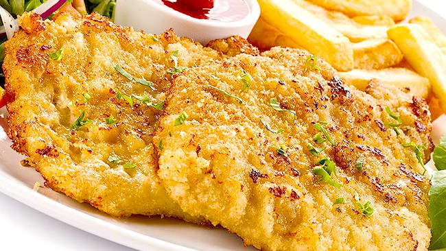

Milanesa De Pollo

Description
The milanesa de pollo is basically a fried slice of chicken,
but it is a different fried chiken, it is a special dish that will
brighten your day!
Ingredients
- 2 large eggs, or more as needed
- A handful of parsley
- Breadcrumbs
- Chicken supreme
- Salt
- Oil
Steps
- Break the eggs into a bowl
- Cut your parsley and add it into the container
- Add salt to the mix (and whatever condiment you like)
- Coat your chicken supreme with the mix
- Put the coated chicken into a bowl with the breadcrumb only
- Make the breadcrumb stick to the chicken
- Immerse the milanesa into the hot oil
- 3 minutes until you flip the milanesa
- When it looks crispy, you put it in a plate
- Enjoy your milanesa!
Go back